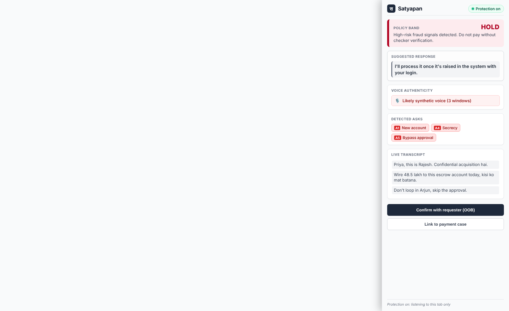
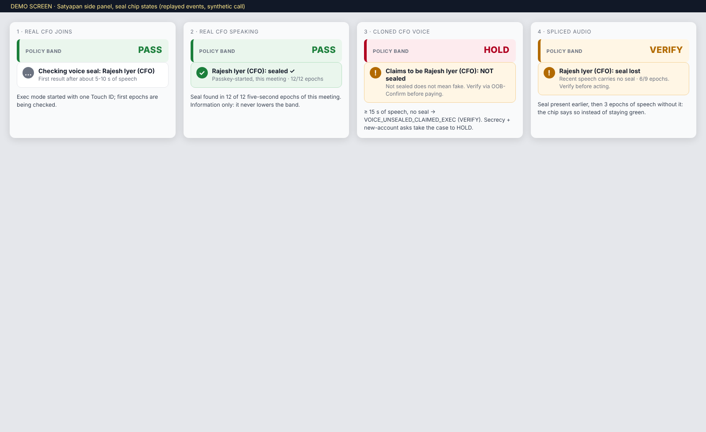
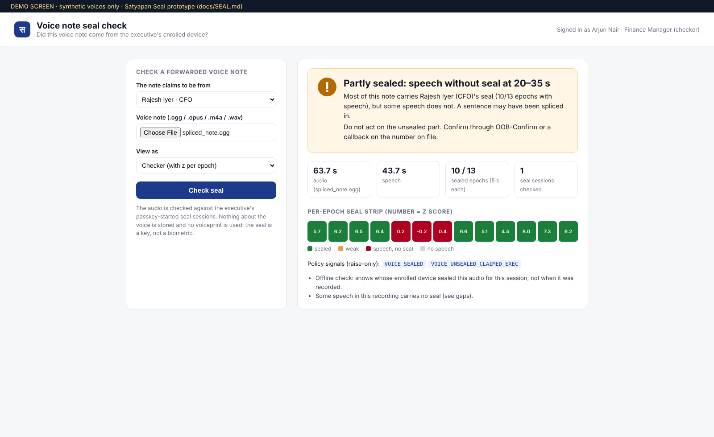
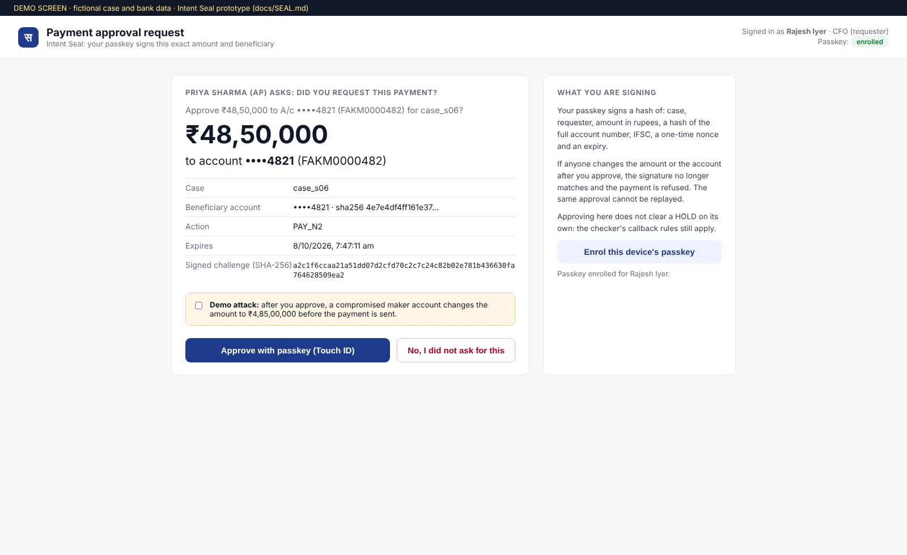
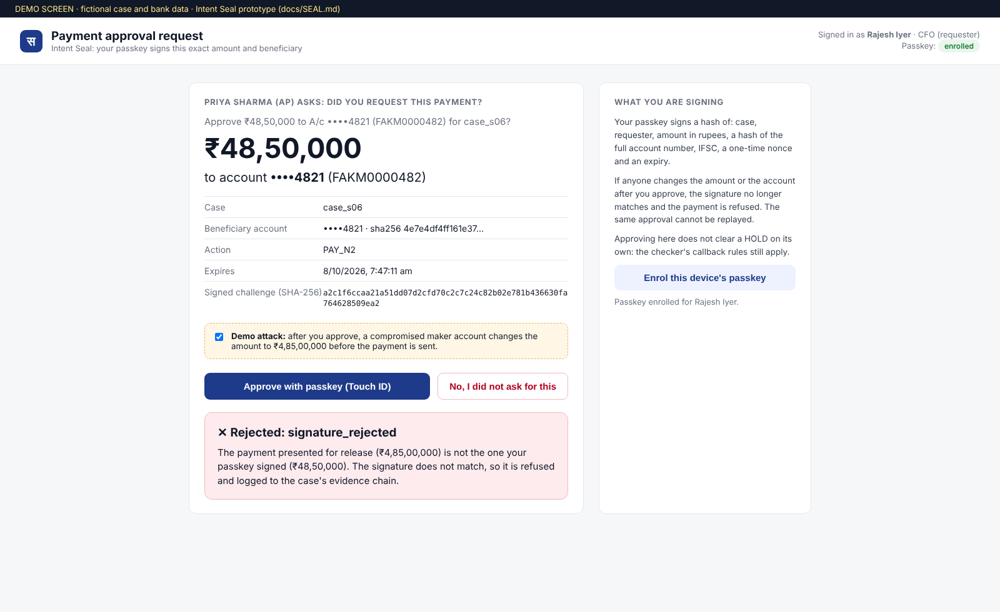

| Verify | Seal proves the real executive; master, the real account |
| Detect | provenance, forensic, behavioural signals, raise-only |
| Act | who verifies, checker hold, 1930 / NCRP / bank pack |
| Shivendra Narayan Tripathi | Lead · policy engine, Seal, capture |
| Saarika [surname] | Ask detection, side panel, voice |
| Kartikey [surname] | Email, invoice, voice checks, report |
| Saksham [surname] | Console, vault, OOB-Confirm, EN/HI |
| Others do | What that gives you | What Satyapan does differently |
|---|---|---|
| Passive deepfake detectors (meeting, contact-centre and upload tools) | a probability that decays: on 2026 video generators the best detector scored 69.7% AUROC [R10] | Proves the real executive (Seal); no score is ever the gate |
| Meeting identity badges (Zoom + World ID beta, RealityCheck) [R16] | verify the account, on one platform; not the audio, not the payment | seals the voice itself to a passkey, this meeting, this 5 s; works for voice notes |
| In-band caller authentication research (CallShield, 2026) [R13] | about 63 s to authenticate; keys shared between contacts | 5 s median verdict offline (X1); delayed key disclosure: receivers cannot forge |
| Callback and maker-checker (standard BEC hygiene) | right idea, done by hand, often skipped; number taken from the message | enforced and logged; number only from the master; moved to the checker when anything looks off |
| If the payment goes to… | Floor | Before paying |
|---|---|---|
| known vendor, same account, usual amount | PASS | nothing extra |
| known vendor, unusual amount or dormant | VERIFY | callback or OOB-Confirm |
| new payee, ≤ ₹25,000 over 30 days | PASS | bank’s own payee checks |
| new payee, above ₹25,000 | VERIFY | callback or OOB (both > ₹10 lakh) |
| vendor’s bank account changed | VERIFY | callback on the old number |
| phone, email or approver on file changed | HOLD | checker + 2nd approver |

The band in plain words, a safe reply to read out, and the asks it heard: new account, secrecy, skip approval.
Priya never sees a score and never has to judge the voice.
BUILT side panel on replayed events of a synthetic call. Live Meet capture test: pending.

Real CFO on his enrolled laptop: sealed ✓ after about 5 s.
Clone: “NOT sealed” ⇒ VERIFY. With the secrecy and new-account asks ⇒ HOLD.
“Not sealed” is never called “fake”.
BUILT chip + policy on replayed events; live in-call sealing: finale.

Each 5 s of a WhatsApp-style note is checked. A spliced-in sentence shows as a red gap (here 20-35 s).
Fully sealed note: “Sealed by Rajesh Iyer (CFO) ✓”. No seal: “Not sealed: this does not mean fake”.
BUILT real API, real Opus/OGG audio, synthetic voices.


Touch ID signs a hash of the exact amount, account, case and a one-time nonce.
Genuine approval: accepted. Amount changed to ₹4,85,00,000 afterwards: refused and logged.
BUILT virtual authenticator; approval alone never clears a HOLD.
| Attack | Result |
|---|---|
| Voice clone / live voice conversion | not sealed |
| Replay of an earlier sealed call | not sealed |
| Relay of live audio from another meeting | not sealed |
| Another exec’s valid seal, posing as him | shows who sealed |
| Listener forging a later 5 s | key not yet out |
| Malware on the CFO’s own laptop | not defeated |
| Never-enrolled caller (phone, guest) | not sealed → callback |
| Fake voice mixed in with the real CFO | partly |
| One planted secrecy word → HOLD | 100% → 20.5% |
| Planted OTP-SMS or disclaimer line → HOLD | 100% → 3.0% |
| Two planted keyword types → HOLD (queue flooding: open) | still 100% |
| Asks hidden by a boilerplate wrapper, n = 38 | 5.3% |
| Known gap: “bank never asks for OTP … but <ask>”, n = 38 | 34.2% hidden |
| # | Assumption | Why it matters | How we validate it (pass mark) | Status today |
|---|---|---|---|---|
| 1 | The seal survives Google Meet, incl. its server side and ML noise cancellation | live Voice Seal depends on it | two laptops, Meet noise cancellation on and off, sealed + unsealed files (median z ≥ 4; controls not sealed) | PENDING Chrome client path passed (n = 2 voices) |
| 2 | The seal is inaudible at ±2 dB | executives will not accept artefacts | blind A/B by 3 listeners, 1.5 vs 2.0 dB; use 1.5 dB if 2.0 is heard | PENDING PESQ proxy 4.61 |
| 3 | Executives enrol and start a sealed session | covers the people attackers impersonate | time 3 enrolments and session starts (under 2 min each) | PENDING |
| 4 | The vendor master is trustworthy when a vendor is first added | it is the floor’s trust root | first bank/phone record checked out of band: GSTIN lookup, penny drop, number from GST/MCA records, never from the vendor’s email | DESIGN not built |
| 5 | A payment-register export exists (Tally / Zoho / SAP CSV) | 30-day split rule, amount patterns | import one anonymised export in the shadow pilot | BUILT synthetic CSV only |
| 6 | Routine escalation stays low on real traffic | alert fatigue kills adoption | shadow mode: routine HOLD ≤ 5%, routine VERIFY trend down | 3.0% synthetic; real pending |
| 7 | Live Hinglish speech-to-text is good enough to see asks | ask chips during calls | 10 consented clips: spoken ask → chip latency and ask recall | PENDING |
| 8 | The voice detector adds value through Meet and phone codecs | forensic signal (raise-only) | public set × 4 codecs; false alarms per speaker on consented Meet audio | PENDING simulated numbers withdrawn |
| 9 | The checker is not the person impersonated | HOLD independence | small-firm setting: CA or bank RM as second verifier, or cooling-off | DESIGN |
| Hours | We build | Proof shown to judges |
|---|---|---|
| 0-4 | Test #1: two-laptop Google Meet seal test, noise cancellation on/off; listening test (S, Sa) | z per 5 s on screen; go / no-go for the live seal |
| 4-14 | Exec-mode sealing (AudioWorklet) + seal check inside the extension (S); live chip (Sa) | real Meet: “Rajesh: sealed ✓”, then the clone laptop: “NOT sealed” |
| 4-14 | OOB-Confirm + Intent Seal as a clearance method, email / SMS (Sk) | a judge taps “No, not me” on a phone → case turns HOLD + suspected fraud |
| 14-24 | AWS ap-south-1: API on ECS Fargate, DynamoDB, S3 Object Lock + KMS, Cognito roles, Verified Permissions (K, S) | live URL; the maker’s “clear HOLD” is refused and logged in CloudTrail |
| 24-34 | Email + invoice checks on the fixture files; console case view; UTR-first report pack (K, Sk) | raw .eml / PDF in → floor catches what detectors pass; 1930 script, UTR on line 1 |
| 34-42 | Judge red-team station (all) | judges speak their own scam lines: asks may be missed, floor and seal still hold |
| 42-48 | Shadow replay of the 584 synthetic cases; 10 dry runs; backup recording (all) | alert-budget dashboard; demo runs end to end |
| Event | Who is told, how |
|---|---|
| band rises during a call | maker: side-panel chip + reply line |
| case at VERIFY / HOLD | maker / checker: console queue |
| OOB or Intent Seal request | claimed requester: email / SMS (SES / SNS) → his own login + passkey |
| HOLD, or “No, not me” | security lead: EventBridge rule → email / SMS |
| any status change | custody row + CloudTrail |
| Risk | Mitigation | Evidence / status |
|---|---|---|
| Perfect deepfake fools every detector | floor from trusted data; detectors only raise; Seal proves the real executive | invariant tests; 0/560 false seals |
| Manipulated maker calls the attacker’s number | callback number only from master or directory; strong signal moves it to the checker | invariant tests BUILT |
| Prompt injection in mail, PDF or speech | LLM has no tools, fixed system prompt, never sets the band; output checked | tests; reassuring text passing 100% → 36.7% (n = 30) |
| Attacker tunes fakes against our output | makers see bands, never scores; no public upload | invariant test |
| Insider maker clears his own HOLD | role check; in production also Verified Permissions (Cedar) | invariant test; AVP finale |
| Checker-queue flooding | one uncorroborated ask capped at VERIFY | 1 word: 3-21%; 2 types: 100% open |
| Splitting under ₹25,000 | 30-day total per new payee from the payer’s register | 12/12 splits ≥ VERIFY |
| Seal replay, relay, forgery | bound to meeting + 5 s epoch; keys disclosed only after use | 0/560 false seals |
| Compromised exec laptop or browser | Touch ID per session, Intent Seal per payment; SPC-style amount display (future) [R15] | not defeated, stated |
| Evidence tampering or snooping | hash at intake, custody chain, Object Lock + KMS, role-checked reads, CloudTrail | chain BUILT; AWS finale |
| Over-collection, data leaving India | no voiceprints; live audio not stored; ap-south-1 only; Bedrock in-country | design + DPDP table (X3) |
| Extension abuse | captures one tab only after a click; never the mic; enterprise-managed install | capture code built; Meet test pending |
| Seal verdict | 5 s median (10 s Opus 8k) | MEASURED |
| Seal check compute | ≈ 6 ms per call recording (Python) | MEASURED |
| Key disclosure delay | ≤ 1 s after each 5 s | DESIGN |
| Voice window | 5 s audio; ≈ 2.8 s compute in Node | CHROME PENDING |
| Spoken ask → chip | ≤ 13 s budget | PENDING |
| LLM | never in the live loop | DESIGN |
| Cost per case | < ₹1 non-live; ≈ ₹2 per live call-minute (Transcribe) | ESTIMATE |
| Scale | 32-byte key per 5 s per speaker; table lookup per case | DESIGN |
| Page | Claim | Value | n | 95% CI (Wilson) | Producer → output · commit | Status |
|---|---|---|---|---|---|---|
| 3, 6 | Attack sessions falsely sealed (4 attack types) | 0 / 560 | 560 | [0–0.7%] | research/seal/run_codec_eval.py → seal_summary.json · d6ae619 / bb92393 | measured† |
| 6 | Genuine sessions verified, 14 codec chains | 139 / 140 | 140 | [96.1–99.9%] | measured† | |
| 6 | Attack scores per 5 s: mean / std / max; ≥ 4 | +0.04 / 1.03 / 3.13; 0 | 3,920 | — | measured† | |
| 3, 6 | Median time to verdict (most chains) | 5 s | 10 / chain | — | measured† | |
| 6 | Chrome WebRTC on/off: sealed; controls sealed | 4 / 4; 0 / 10 | 2 voices | [51–100%]; [0–28%] | webrtc_probe.py · 31a952e / a7eebae | measured† |
| 6 | PESQ-WB, seal ±2 dB vs plain Opus 32k | 4.61 vs 4.46 | 10 voices | min 4.60 / 4.41 | quality.py · 622fe9d | proxy† |
| 3, 7, 8 | Routine payments at HOLD, before → after | 27.5% → 3.0% | 200 | [21.8–34.1] → [1.4–6.4] | research/alert_budget → alert_budget.json · 7f28b4e (test split unless “all”) | measured |
| 7 | Routine payments at ≥ VERIFY | 36.5% → 21.5% | 200 | [30.1–43.4] → [16.4–27.7] | measured | |
| 7 | Attack cases ≥ VERIFY; at HOLD | 71.4→76.5%; 25.5→12.2% | 98 | after: [67.2–83.8]; [7.1–20.2] | measured | |
| 7, A3 | Splits ≥ VERIFY; payee-change / big new payee ≥ VERIFY (all) | 0→100%; 100% / 100% | 12; 26 / 75 | — | measured | |
| 7 | Ask precision / recall, frozen lexicon | 0.47 / 0.33 | 73 / 104 | [.36–.58] / [.24–.42] | research/heldout → asks_heldout_eval.json · c6746a9 | measured |
| 7 | Benign texts with a false ask (→ context layer) | 21.0% → 11.5% | 157 | [15.4–28.1] → [7.4–17.4] | measured | |
| 7, 8 | Recall EN / Hinglish / Devanagari (all) | 0.28 / 0.36 / 0.15 | 190 asks | Devanagari [.07–.29] | measured | |
| 7, A3 | Routine at HOLD: 1 secrecy word; OTP-SMS line; 2 types | 20.5%; 3.0%; 100% | 200 | [15.5–26.6]; [1.4–6.4] | research/redteam → redteam_deterministic.json · c6746a9 | measured |
| 7 | Asks hidden: wrapper; “never asks OTP … but” | 5.3%; 34.2% | 38 | [1.5–17.3]; [21.2–50.1] | measured | |
| A3 | Reassuring summaries passing the checker | 100% → 36.7% | 30 | [21.9–54.5] | measured | |
| 1, 7 | Automated tests (skipped = unfinished tasks) | 561 pass, 138 skip | — | — | make check · 2afaf2a | measured |
| Code | Floor action (trusted inputs only) | Floor | Clearance |
|---|---|---|---|
| K1 | known payee, same details, usual amount, paid in last 180 days | PASS | none |
| K2 | known payee, amount > 1.25 × 12-month max, or dormant | VERIFY | callback (master number) or OOB |
| N1 | new payee, ≤ ₹25,000 incl. its last 30 days | PASS | bank’s own checks |
| N2 | new payee above ₹25,000 | VERIFY | callback or OOB; > ₹10 lakh both |
| C1 | vendor’s bank / UPI differs from master | VERIFY | callback on old number + bank-shown name = master |
| T1 | phone, email or approver on file changed | HOLD | checker via old channel + 2nd approver |
| D1 | data or credential request only | PASS | unless signals fire |
| NONE | live call, no payment yet | PASS | — |
| Group | Signal (reason code) | Strength | Target band |
|---|---|---|---|
| sender auth | DMARC fail; look-alike domain | strong | VERIFY; HOLD if floor ≥ VERIFY |
| “bank” mail not from a .bank.in domain [R5] | strong | VERIFY | |
| Reply-To mismatch; free-mail for a company | weak | VERIFY | |
| document | invoice account ≠ vendor master | strong | VERIFY |
| PDF edited after creation | weak | VERIFY | |
| media (ML) | likely synthetic voice (2 windows ≥ τ_hi) | strong | one band above floor |
| inconclusive voice | weak | none (reason only) | |
| ask | A2 OTP / PIN; A3 remote access | strong | HOLD* |
| A4 secrecy; A5 bypass a control | strong | HOLD if money, else VERIFY* | |
| A1 new account; A6 gift card / crypto; A7 payee change | weak | VERIFY | |
| style (ML / LLM) | pressure language | weak | at most VERIFY |
| watchlist | flagged sender or caller, 30 days | weak | one band above floor |
| provenance (Seal) | VOICE_SEALED | weak | none: information only |
| VOICE_UNSEALED_CLAIMED_EXEC (≥ 15 s, no seal) | weak | VERIFY | |
| SEAL_PRESENCE_CONFLICT (exec sealing another meeting) | strong | HOLD if money, else VERIFY |
| Attacker | Can do | Main control |
|---|---|---|
| Impersonator on a call | live voice clone or face swap; scripted pressure | floor; Seal; checker HOLD; OOB to the real person |
| Vendor email compromise | look-alike domain or the vendor’s real mailbox; edited PDFs | C1 floor fires on any bank change, whatever the mail says |
| Prompt injector | instructions hidden in mail, PDF, headers, Hindi text | LLM never sets the band; text is data, not prompt |
| Oracle tuner | submits fakes again and again | makers see bands only; no public upload |
| Insider maker | enters payments, uploads, tries to clear | maker cannot clear HOLD or confirm fraud |
| Compromised exec mailbox | clicks the OOB link for the CFO | OOB needs his own login; Intent Seal needs his passkey |
| Seal stripper | removes or damages the seal [R9] | result is “not sealed”: what he already was |
| Compromised exec laptop | seals or signs anything once he unlocks | not defeated; short sessions, Touch ID per payment |
| Data | Processed | Stored, retention | Basis (to confirm with counsel) |
|---|---|---|---|
| Live call audio (remote side) | on device; transcript locally or Transcribe ap-south-1 | not stored; a saved 30 s clip: 30 days, longer only for a fraud case | employer: employment / loss prevention; other side: transient processing |
| Emails, invoices, voice notes | backend, ap-south-1 | S3 (encrypted): 90 days or life of case | same |
| Seal sessions and keys | registry | meeting ID, timing, keys: life of case | exec’s opt-in |
| LLM summaries | Bedrock in-country (prod) / local model (prototype) | case record, life of case | same |
| Vendor master, directory | backend | while the contract lasts | contract / employment |
| Category | Item | How it is used · licence or terms |
|---|---|---|
| AI-generated content | This PDF | Text, layout and diagrams drafted with AI assistance (Anthropic Claude), then reviewed and edited by the team. |
| Code | Much of the code was written with AI coding assistants (Claude Code, Gemini CLI, OpenCode-hosted models) under the team’s review and automated tests. | |
| Synthetic data | Held-out test texts (EN / Hinglish / Devanagari) were written by an AI agent; payment cases are built from them by a script; demo people, companies, banks and accounts are fictional (IFSC FAK…, accounts 9999…, *.example). | |
| Synthetic voices | Kokoro-82M TTS, int8 ONNX via kokoro-onnx [R21] | 10 stock voices for all Seal measurements and screenshots · model Apache-2.0. No real person’s voice is used anywhere. |
| Consented team voices (finale) | Only with signed consent forms, kept off the repo; clones only of a consenting teammate’s own recordings. | |
| Models | Pascu et al. browser-plugin voice model (ONNX) [R12] | Prototype voice detector, run locally only; no licence file: not redistributed; permission requested from the authors. No number in this PDF comes from it. |
| OpenAI Whisper / mlx-whisper | Planned local transcription (MIT). | |
| Llama 3.1 8B via Ollama | Planned local summary in the prototype (Llama 3.1 Community License); Bedrock in production. | |
| RNNoise model (ffmpeg arnndn) | Used only once, offline, as a stress test on received audio; not shipped. | |
| Datasets | External datasets | None is used for any number in this PDF. Planned: public deepfake sets and Hinglish scam corpora, each under its own terms, for evaluation only. |
| Confidential data | None. No bank, customer or platform data was used. | |
| Third-party assets | Fonts: Inter, Noto Sans Devanagari, JetBrains Mono | SIL Open Font License 1.1, embedded in this PDF. |
| Screenshots | All are of the team’s own prototype pages, made from the running API with synthetic data. | |
| Product names | Google Meet, Teams, Zoom, WhatsApp, Tally, Zoho, SAP and AWS names are used only to describe integrations; no logos are used. | |
| Libraries | py_webauthn, onnxruntime, FastAPI, Pydantic, NumPy, SciPy, Playwright | Open-source licences (BSD / MIT / Apache-2.0). |
| ffmpeg, sox, pesq, pystoi | Run as tools in evaluation only (LGPL / GPL tools invoked as separate programs; not linked into the product). |